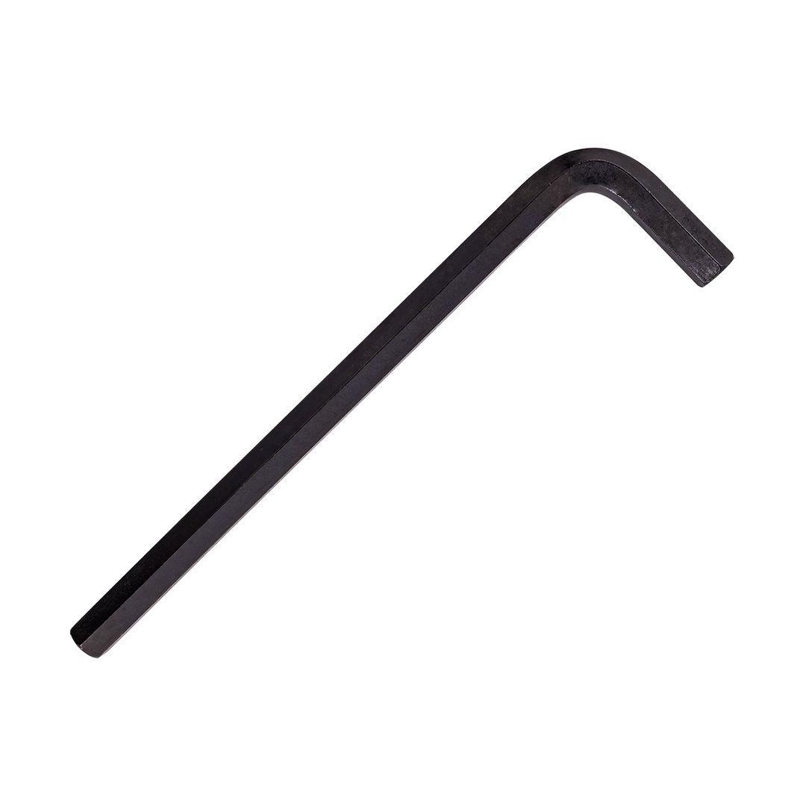

TCAK30100

Size: 10.0mm
Short side: 38mm
Long side: 170mm
An L-wrench hex key, also known as an Allen key, is a simple yet essential hand tool used to tighten or loosen bolts and screws with a hexagonal socket head. It&s named for its characteristic "L" shape, which provides two gripping points for better leverage and control.
Application: